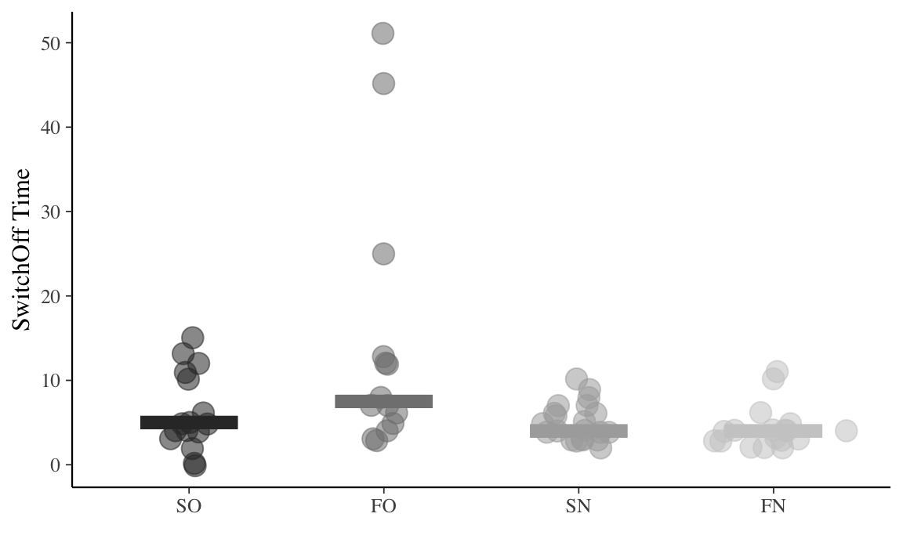
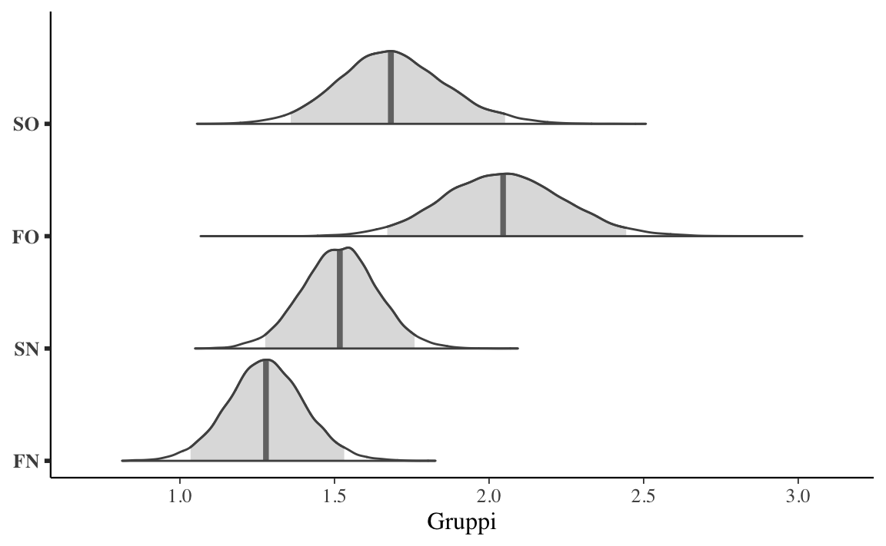

Capitolo 7 Confronto di \(k\) gruppi
L’Analisi della Varianza (ANOVA) consente ai ricercatori di valutare gli effetti di predittori categoriali su una variabile di esito continua. L’ANOVA è un’analisi di regressione nella quale tutte le variabili indipendenti sono qualitative.
7.1 Le abilità sociali di un robot
Per illustrare i concetti chiave dell’ANOVA bayesiana considereremo qui una ricerca di Horstmann et al. (2018). I ricercatori si sono chiesti se le persone impiegano più tempo a spegnere un robot quando questo mostra abilità sociali. Nell’esperimento di Horstmann et al. (2018), 85 partecipanti hanno interagito con un robot per un certo tempo. Ai partecipanti è stato detto che lo scopo della loro interazione con il robot era quella di testare un nuovo algoritmo. Dopo il completamento di due compiti fittizi, ai partecipanti veniva detto che, se volevano, potevano spegnere il robot. La variabile di interesse dell’esperimento era il tempo impiegato dai partecipanti per spegnere il robot. Seguendo Bergh et al. (2020), analizzeremo i tempi di spegnimento trasformati su scala logaritmica perché tale variabile mostra una chiara asimmetria positiva.
Horstmann et al. (2018) hanno manipolato due variabili in un disegno tra i soggetti.
- Interaction type. Le risposte verbali dei robot potevano essere o sociali (ad esempio, “Oh sì, la pizza è ottima. Una volta ho mangiato una pizza grande come me.”) o funzionali (ad esempio, “Preferisci la pizza. Ha funzionato bene. Continuiamo.”).
- Robot’s objection. Il robot poteva protestare quando stava per essere spento (ad esempio, “No! Per favore, non spegnermi! Ho paura di non riuscire ad accendermi di nuovo!”) oppure no.
Pertanto, il disegno di questo studio è un’ANOVA tra i soggetti 2 (Interaction type) \(\times\) 2 (Robot’s objection).
Iniziamo a leggere i dati
d <- rio::import(
here("data", "pone.0201581.s001.sav")
)Per comodità creiamo la variabile cond con quattro modalità (SO, FO, SN, FN), dove S significa social interaction, F sta per funcitonal interaction, O sta per objection e N sta per no objection.
d$cond <- factor(d$Condition)
d$cond <- factor(
d$cond,
labels = c("SO", "FO", "SN", "FN")
)Ci sono alcuni dati mancanti, quindi verranno omesse le righe con NA. Selezionando le colonne di interesse dal data.frame originario otteniamo:
dd <- d %>%
dplyr::select(cond, SwitchOff_Time) %>%
na.omit()Nelle quattro condizioni si osservano le seguenti medie (si veda la Tabella 3 di Horstmann et al. 2018):
dd %>%
group_by(cond) %>%
summarise(
avg_sot = mean(SwitchOff_Time, na.rm = TRUE),
sd_sot = sd(SwitchOff_Time, na.rm = TRUE)
)
#> # A tibble: 4 × 3
#> cond avg_sot sd_sot
#> <fct> <dbl> <dbl>
#> 1 SO 6.19 4.61
#> 2 FO 14.4 15.4
#> 3 SN 5.05 2.18
#> 4 FN 4.28 2.49Visualizziamo i dati:
dd_summary <- dd %>%
group_by(cond) %>%
summarize(
sot_mean = mean(SwitchOff_Time),
sot_sd = sd(SwitchOff_Time),
sot_median = median(SwitchOff_Time)
) %>%
ungroup()
dd %>%
ggplot(
aes(x = cond, y = SwitchOff_Time, color = cond)
) +
ggforce::geom_sina(
aes(color = cond, size = 3, alpha = .5)
) +
geom_errorbar(
aes(
y = sot_median, ymin = sot_median,
ymax = sot_median
),
data = dd_summary, width = 0.5, size = 3
) +
scale_colour_grey(name = "cond") +
labs(
x = "",
y = "SwitchOff Time",
color = "Condizione"
) +
theme(legend.position = "none")
Su scala logaritmica, l’asimmetria positiva della variabile dd$SwitchOff_Time viene ridotta.

Per i dati trasformati, la mediana in ciascuna condizione è:
dd$y <- log(dd$SwitchOff_Time + 0.01)
dd %>%
group_by(cond) %>%
summarise(
avg_y = median(y)
)
#> # A tibble: 4 × 2
#> cond avg_y
#> <fct> <dbl>
#> 1 SO 1.61
#> 2 FO 2.01
#> 3 SN 1.39
#> 4 FN 1.39Creiamo ora la variabile x che indicizza le quattro condizioni (la variabile x verrà usata nel modello Stan):
dd$x <- as.numeric(dd$cond)
head(dd)
#> cond SwitchOff_Time y x
#> 3 SN 6 1.793425 3
#> 4 FO 7 1.947338 2
#> 5 FO 3 1.101940 2
#> 6 FN 4 1.388791 4
#> 7 FN 4 1.388791 4
#> 8 FO 12 2.485740 2Il modello bayesiano che usiamo qui per il confronto tra le medie dei quattro gruppi è una semplice estensione del modello per la media di un solo gruppo. Il codice usato è ispirato da quello fornito nella seguente pagina web. Per adattare un modello “robusto”, ipotizzeremo che la y segua una distribuzione \(t\) di Student con un numero di gradi di libertà stimato dal modello.
Il modello classico dell’ANOVA è basato sulle seguenti assunzioni:
- i residui (cioè la differenza tra il valore dell’\(i\)-esima osservazione e la media di tutte le osservazioni nella \(k\)-esima condizione) devono seguire la distribuzione normale (normalità);
- i residui devono avere la stessa deviazione standard nelle \(k\) popolazioni da cui abbiamo estratto i dati (omoschedasticità);
- il disegno sperimentale utilizzato per raccogliere i dati deve garantire l’indipendenza dei residui.
Nella presenta formulazione dell’ANOVA bayesiana, l’assunto di normalità non è richiesto, mentre devono essere soddisfatte le condizioni di omoschedasticità e indipendenza. L’ANOVA bayesiana può comunque essere estesa a condizioni che violano sia l’assunto di omoschedasticità sia quello di indipendenza. Ma qui ci limitiamo a discutere il caso più semplice.
modelString = "
// Comparison of k groups with common variance (ANOVA)
data {
int<lower=0> N; // number of observations
int<lower=0> K; // number of groups
int<lower=1,upper=K> x[N]; // discrete group indicators
vector[N] y; // real valued observations
}
parameters {
vector[K] mu; // group means
real<lower=0> sigma; // common standard deviation
real<lower=1> nu;
}
model {
mu ~ normal(0, 2); // weakly informative prior
sigma ~ normal(0, 1); // weakly informative prior
nu ~ gamma(2, 0.1); // Juárez and Steel(2010)
y ~ student_t(nu, mu[x], sigma); // observation model / likelihood
}
"
writeLines(modelString, con = "code/grp_aov.stan")Creiamo un oggetto che contiene i dati nel formato appropriato per Stan:
data_grp <- list(
N = nrow(dd),
K = 4,
x = dd$x,
y = dd$y
)Compiliamo il modello:
file <- file.path("code", "grp_aov.stan")
mod <- cmdstan_model(file)Eseguiamo il campionamento MCMC:
fit <- mod$sample(
data = data_grp,
iter_sampling = 4000L,
iter_warmup = 2000L,
seed = SEED,
chains = 4L,
parallel_chains = 2L,
refresh = 0,
thin = 1
)Esaminando i risultati
fit$summary()
#> # A tibble: 7 × 10
#> variable mean median sd mad q5 q95 rhat ess_bulk ess_tail
#> <chr> <dbl> <dbl> <dbl> <dbl> <dbl> <dbl> <dbl> <dbl> <dbl>
#> 1 lp__ -41.2 -40.9 1.85 1.69 -44.7 -38.9 1.00 6774. 9294.
#> 2 mu[1] 1.69 1.68 0.175 0.170 1.41 1.99 1.00 21498. 12257.
#> 3 mu[2] 2.05 2.05 0.196 0.196 1.73 2.37 1.00 20722. 10892.
#> 4 mu[3] 1.52 1.52 0.122 0.120 1.32 1.72 1.00 22671. 11935.
#> 5 mu[4] 1.28 1.28 0.125 0.121 1.07 1.49 1.00 21545. 11572.
#> 6 sigma 0.476 0.472 0.0753 0.0736 0.358 0.606 1.00 14197. 11182.
#> 7 nu 2.55 2.41 0.821 0.724 1.49 4.07 1.00 14336. 9374.ci rendiamo conto che cìè una buona corrispondenza tra le medie a posteriori e le medie campionarie. Trasformiamo l’oggetto fit in un oggetto di classe stanfit:
stanfit <- rstan::read_stan_csv(fit$output_files())La funzione rstan::extract() estrae i campioni a posteriori da un oggetto di classe stanfit:
posterior <- extract(stanfit, permuted = TRUE)Una rappresentazione grafica della distribuzione a posteriori delle quattro medie si ottiene con le seguenti istruzioni:
temps <- data.frame(posterior$mu) %>%
setNames(c('SO', 'FO', 'SN', 'FN'))mcmc_areas(temps, prob = 0.95) +
xlab('Gruppi')
I quattro intervalli di credibilità al 95% sono:
ci95 <- rstanarm::posterior_interval(
as.matrix(stanfit),
prob = 0.95
)
round(ci95, 2)
#> 2.5% 97.5%
#> mu[1] 1.36 2.05
#> mu[2] 1.67 2.44
#> mu[3] 1.28 1.76
#> mu[4] 1.03 1.53
#> sigma 0.34 0.63
#> nu 1.37 4.56
#> lp__ -45.67 -38.677.2 I test statistici dell’Analisi della Varianza
L’ANOVA include test statistici di due tipi: i test sull’interazione tra i fattori e i test sugli effetti principali. Per chiarire il significato di “interazione” e di “effetto principale” è necessario prima definire il significato di “effetto statistico”.
Definizione 7.1 L’effetto di un fattore rappresenta la variazione media della variabile dipendente al variare dei livelli del fattore stesso.
Definizione 7.2 Si parla di interazione quando l’effetto di un fattore sulla variabile dipendente varia a seconda dei livelli di un altro fattore.
Vengono presentati qui di seguito alcuni esempi. Le figure seguenti mostrano le medie di ciascuna condizione nel caso di un disegno 3 (fattore riga) \(\times\) 2 (fattore colonna). La spiegazione delle figure è presentata nelle didascalie.
FIGURA 7.1: Il fattore colonna è indicato dal colore. Sinistra La figura mostra un effetto principale del fattore riga e un effetto principale del fattore colonna. Non c’è interazione tra i fattori riga e colonna. Destra La figura mostra un effetto principale del fattore riga. L’effetto principale del fattore colonna è zero. Non c’è interazione tra i fattori riga e colonna.
FIGURA 7.2: Il fattore colonna è indicato dal colore. Sinistra La figura mostra che l’effetto principale del fattore riga è zero, mentre c’è un effetto principale del fattore colonna. Non c’è interazione tra i fattori riga e colonna. Destra Non c’è né un effetto principale del fattore riga, né un effetto pricipale del fattore colonna, né un’interazione tra i fattori riga e colonna.
FIGURA 7.3: Il fattore colonna è indicato dal colore. Entrambe le figure mostrano un’interazione tra i fattori riga e colonna. Nella figura di sinistra gli effetti principali non sono interpretabili; nella figura di destra gli effetti principali sono interpretabili in quanto l’interazione è di lieve entità.
Dagli esempi precedenti si evince che c’è un’interazione ogni qualvolta i profili delle medie non sono paralleli. Anche se, nella popolazione, non c’è interazione, a causa della variabilità campionaria i profili delle medie non sono mai perfettamente paralleli nel campione. Il problema è quello di stabilire se l’assenza di parallelismo nel campione fornisce sufficiente evidenza di presenza di interazione nella popolazione.
7.2.1 Test sull’interazione
Ritorniamo ora ai dati di Horstmann et al. (2018). Nel caso di un disegno 2 \(\times\) 2, con i fattori Interaction type (social, functional) e Robot’s objection (objection, no objection), è possibile verificare la presenza dell’interazione Interaction type \(\times\) Robot’s objection.
Nel modello bayesiano, la distribuzione a posteriori fornisce un enorme numero di stime del valore della media in ciascuna delle quattro condizioni. L’effetto di un fattore corrisponde alla differenza tra le stime della media in corrispondenza di ciascuna modalità del fattore.
Nel caso presente abbiamo:
mu[1]\(\rightarrow\) SOmu[2]\(\rightarrow\) FOmu[3]\(\rightarrow\) SNmu[4]\(\rightarrow\) FN
Quindi, mean(posterior$mu[, 1] - posterior$mu[, 3]) corrisponde alla stima a posteriori dell’effetto di Objection nella condizione Social Interaction. Invece, mean(posterior$mu[, 2] - posterior$mu[, 3]) corrisponde alla stima a posteriori dell’effetto di Objection nella condizione Functional Interaction. In assenza di interazione, questi due effetti devono essere (statisticamente) uguali.
Per sottoporre a verifica questa ipotesi, calcoliamo la proporzione di volte in cui questo non si verifica nella distribuzione a posteriori:
sum(
(posterior$mu[, 1] - posterior$mu[, 3]) >
(posterior$mu[, 2] - posterior$mu[, 4])
) /
length(posterior$mu[, 1])
#> [1] 0.0314375La stima di questa probabilità in un test direzionale è molto simile alla probabilità frequentista riportata da Horstmann et al. (2018), ovvero \(p = 0.016\). Horstmann et al. (2018) riportano la presenza di un’interazione tra Interaction type e Robot’s objection (com’è stato anche trovato con la presente ANOVA bayesiana). Per interpretare l’interazione è necessario esaminare le mediane dei quattro gruppi.6 L’esame delle mediane indica che l’effetto del fattore Robot’s objection è più grande quando il fattore Interaction type assume la modalità Functional piuttosto che Social. Ma possiamo anche leggere l’interazione nella direzione opposta: l’effetto del fattore Interaction type è più grande quando il fattore Robot’s objection assume la modalità Objection anziché No objection.
7.2.2 Test sugli effetti principali
L’effetto principale descrive l’effetto marginale di un fattore. Nel caso presente, in cui ciascun fattore ha solo due modalità, l’effetto principale corrisponde alla differenze tra le medie delle modalità di ciascun fattore.
L’effetto principale del fattore Interaction type è la differenza tra le medie di Social e di Functional, ignorando Robot’s objection. Horstmann et al. (2018) riportano che gli individui che avevano avuto un’interazione funzionale con il robot impiegavano più tempo a spegnere il robot di coloro che avevano avuto un’interazione sociale con il robot (\(p\) = 0.045). Il presente modello bayesiano offre scarse evidenze di ciò:
mean((exp(posterior$mu[, 2]) + exp(posterior$mu[, 4])) / 2)
#> [1] 5.765852
mean((exp(posterior$mu[, 1]) + exp(posterior$mu[, 3])) / 2)
#> [1] 5.043196Infatti, all’evento complementare possiamo associare la seguente probabilità:
sum(
(posterior$mu[, 2] + posterior$mu[, 4]) <
(posterior$mu[, 1] + posterior$mu[, 3])
) /
length(posterior$mu[, 1])
#> [1] 0.344125L’effetto principale del fattore Robot’s objection è la differenza tra le medie di Objection e di No Objection, ignorando Interaction type. Horstmann et al. (2018) riportano che i partecipanti avevano aspettato più a lungo prima di spegnere il robot quando il robot aveva avanzato un’obiezione rispetto a quando non si era opposto ad essere spento:
mean(
(exp(posterior$mu[, 1]) + exp(posterior$mu[, 2])) / 2
)
#> [1] 6.701133
mean(
(exp(posterior$mu[, 3]) + exp(posterior$mu[, 4])) / 2
)
#> [1] 4.107915In base al modello bayesiano, la probabilità direzionale per l’evento complementare è
sum(
(posterior$mu[, 1] + posterior$mu[, 2]) <
(posterior$mu[, 3] + posterior$mu[, 4])
) /
length(posterior$mu[, 1])
#> [1] 0.0011875e corrisponde, in ordine di grandezza, alla probabilità frequentista riportata da Horstmann et al. (2018), ovvero \(p\) = 0.004.
7.3 Codice Stan (versione 2)
È possibile modificare il codice Stan precedente così da avere i dati grezzi in input ed eseguire la standardizzazione all’interno del programma.
modelString = "
// Comparison of k groups with common variance (ANOVA)
data {
int<lower=0> N; // number of observations
int<lower=0> K; // number of groups
int<lower=1,upper=K> x[N]; // discrete group indicators
vector[N] y; // real valued observations
}
transformed data {
vector[N] y_std;
y_std = (y - mean(y)) / sd(y);
}
parameters {
vector[K] mu_std; // group means
real<lower=0> sigma_std; // common standard deviation
real<lower=1> nu;
}
model {
mu_std ~ normal(0, 2);
sigma_std ~ normal(0, 2);
nu ~ gamma(2, 0.1); // Juárez and Steel(2010)
y_std ~ student_t(nu, mu_std[x], sigma_std);
}
generated quantities {
vector[K] mu;
real<lower=0> sigma;
for (i in 1:K) {
mu[i] = mu_std[i] * sd(y) + mean(y);
}
sigma = sd(y) * sigma_std;
}
"
writeLines(modelString, con = "code/grp_aovstd.stan")file <- file.path("code", "grp_aovstd.stan")
mod <- cmdstan_model(file)Eseguiamo il campionamento MCMC usando gli stessi dati discussi in precedenza:
fit2 <- mod$sample(
data = data_grp,
iter_sampling = 4000L,
iter_warmup = 2000L,
seed = SEED,
chains = 4L,
parallel_chains = 2L,
refresh = 0,
thin = 1
)I risultati sono equivalenti a quelli trovati in precedenza:
fit2$summary(c("mu", "sigma", "nu"))
#> # A tibble: 6 × 10
#> variable mean median sd mad q5 q95 rhat ess_bulk ess_tail
#> <chr> <dbl> <dbl> <dbl> <dbl> <dbl> <dbl> <dbl> <dbl> <dbl>
#> 1 mu[1] 1.70 1.70 0.176 0.171 1.42 2.00 1.00 22449. 11510.
#> 2 mu[2] 2.07 2.06 0.197 0.196 1.75 2.40 1.00 21774. 12016.
#> 3 mu[3] 1.53 1.52 0.122 0.121 1.32 1.73 1.00 21066. 11485.
#> 4 mu[4] 1.29 1.28 0.127 0.124 1.08 1.50 1.00 20576. 11730.
#> 5 sigma 0.480 0.476 0.0759 0.0744 0.362 0.612 1.00 15958. 12302.
#> 6 nu 2.58 2.44 0.831 0.725 1.51 4.13 1.00 15484. 9221.References
In presenza di outlier la mediana fornisce una misura di tenenza centrale più robusta della media.↩︎